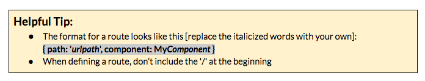

Part 2: Add a router
It is recommended to watch this video [http://bit.ly/router-video] (sign-up for free account to view) or read this article [http://bit.ly/angular2-routing] to see how routers work in Angular 2 & how to configure them.
- Create a new component named about.
- Create a new file in src/app and name it app.routes.ts
- In this new file, we need to import a couple things from the Router module.
Add: import { Routes, RouterModule } from '@angular/router'; - Now we need to set our variable that will hold our routes. Add: const routes: Routes = []; This sets a constant variable named routes [of imported type Routes] to an empty array. We’ll add our routes to this array.
In your array, add 2 routes:
- '' that loads our QuizComponent [this is the root or homepage path '/']
- 'about' that loads our new AboutComponent [this will load for the path '/about']

We need to import our 2 components, so add those 2 import statements to the top of the file.
- Now we need to export our routes, so at the bottom of app.routes.ts, add this:
export const QuizAppRoutes = RouterModule.forRoot(routes); - Open the src/app/app.module.ts file & add an import. Import QuizAppRoutes from app.routes.ts [hint: that needs minor modifications to make that the actual import statement.]
- We also need to add QuizAppRoutes in this file’s @NgModule imports.
- Last, but not least, we need to define where our router will display the relevant component.
In src/app/app.component.html, replace <app-quiz></app-quiz> with <router-outlet></router-outlet> - Visit your app in Chrome to checkout your routes! http://localhost:4200/ & http://localhost:4200/about